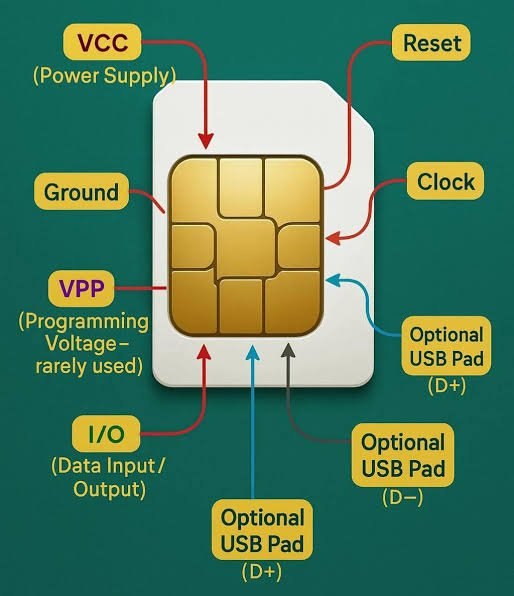

Changing your number? What Kenya’s plan for recycled lines means for you
News
The Communications Authority wants a shared record of phone numbers that have passed to new owners. Here is how it could affect your line, your M-Pesa and your bank alerts. Story Ever received a text meant for a stranger, such as a bank alert or a one-time code? The Communications Authority of Kenya (CA) says it is working on a way to stop that happening. The regulator intends to build a single national record of mobile numbers that have been given to new users. Banks, fintech companies and other businesses that message customers would check it before sending, so their texts don’t land with the wrong person. Mobile operators such as Safaricom and Airtel would update the record every three months with the lines they have switched off or handed on. The CA has pointed to a similar system run in the United States as its model. The database sits inside a bigger set of rules about what happens to lines that go unused. Under the draft, an operator must publish the numbers it is about to switch off at least 30 days beforehand, including in a newspaper sold across the country. Companies would also have to get a customer’s clear approval, through a business-specific USSD request, before sending them commercial messages. And before an operator gives a used number to someone new, it must wipe the old owner’s personal details and linked services from that line. For many people, the real worry is being locked out. If you leave an old number idle and it is later reassigned, you could lose access to services tied to it, including mobile money. The CA says there are safeguards. Operators must announce which numbers are due to be switched off and offer a USSD service where you can check whether yours is affected. Anyone who expects to be out of reach for more than six months, because of illness or time in prison for example, can ask to have their number protected. Pressure for clearer rules has come from several directions. A prisoner who lost his number while in custody took the issue to court in June 2024, and Members of Parliament have asked Safaricom how it handles the lines of customers who stop using their SIM cards. The database itself is not live. The CA’s updated rules came into force on September 19, but the parts that depend on the database will only apply once it has been built. In the meantime, you can protect yourself by keeping important lines active with an occasional call or small top-up, updating your number with your bank and other accounts if you switch, and letting your operator know in advance if you will be unreachable for a long time.